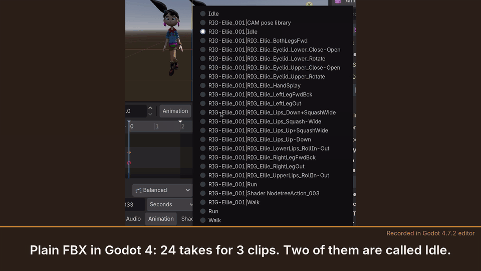
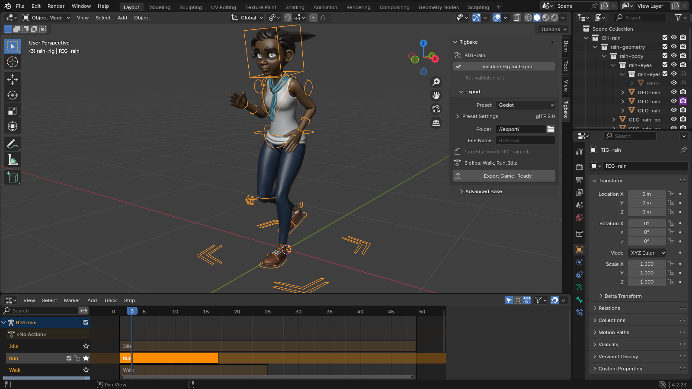
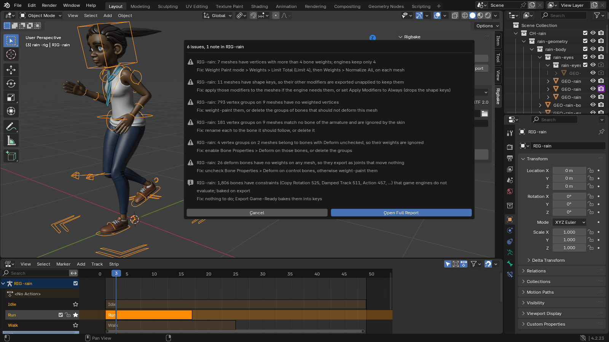
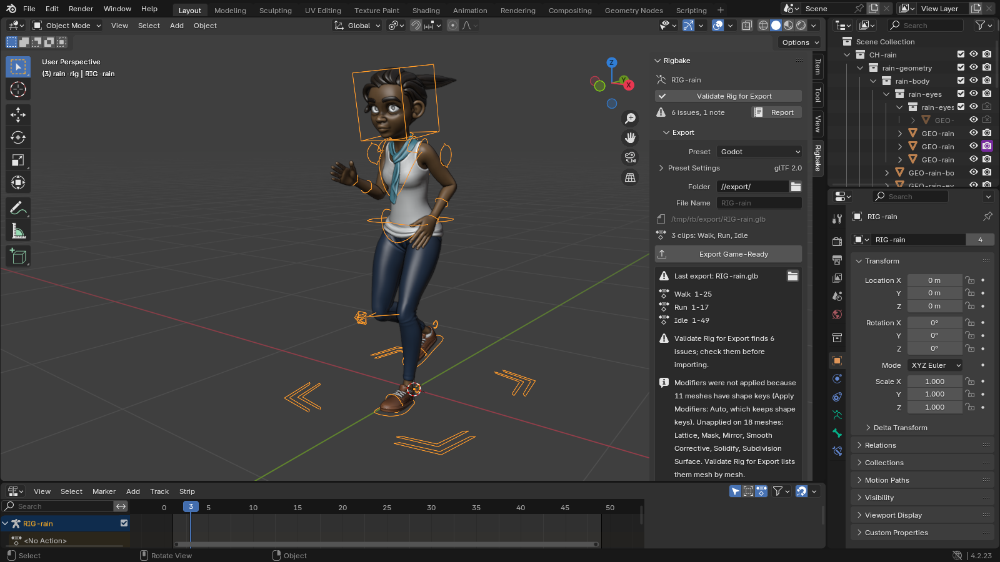

Rigbake for Blender
Control rig or NLA clips? Blender's default export can come out empty or with wrong, duplicated takes. Rigbake exports one clean, correctly named clip per action, with ready settings for Godot, Unity, and Unreal. Your original actions are never touched.
$19, one-time, source included (GPL-3.0-or-later).
Not on sale yet: direct purchase and the Superhive listing open soon. Tell me when it's available.

- Validate Rig for Export checks the rig. Your rig and its actions are not changed.
- Export Game-Ready bakes each clip from the rest pose into plain keys and writes one clean clip per action, as glTF (Godot) or FBX (Unity, Unreal).

What it does
- Export Game-Ready. Bakes every bone constraint and driver into plain keyframes, one new action per clip, from the rest pose, so the result never depends on where the playhead was, and exports through Blender's bundled glTF and FBX exporters with explicit, documented settings. Presets for Godot (glTF), Unity (FBX), and Unreal (FBX), editable in the panel and saved with your file. The panel shows the file and the clips before you click, and keeps the result after: each clip with its frame range, and every warning.
- One clip per action. With the default settings, the active action and every action on the NLA, stashed ones included, each become their own clip, named after the action. Control rigs: Rigbake detects the driving armature (or you pick it) and exports its actions the same way. An action that is neither active nor on the NLA is not exported; the panel names it, with a one-click Add to NLA.
- Validate Rig for Export. Lists what will break on the way to the engine, most damaging first, each with a one-line fix: shape keys a preset would drop, motion keyed on the armature object, unapplied or non-uniform scale, vertices with more than four weights, vertex-group problems. Constraints and drivers that the export bakes are listed as notes, not issues. Repeats are summed up in one line; the full report is one click away.
- Your actions and your edits are kept. Originals are never modified. If you clean up a baked action by hand, the next export keeps it and marks it "hand-edited, kept".
In Blender, for real
Every image below is a capture from a real Blender 4.2 LTS window with Rigbake 1.2.1 installed, or a Godot 4.7 render of its files: not a mockup. The character is Rain, the Blender Studio's free production rig (2166 bones, 2788 bone constraints), with an Idle, a Walk and a Run clip on the NLA and her legs in IK.




Character: Rain Rig (CC) Blender Foundation | studio.blender.org, used under CC BY 4.0. We added the animation clips and simplified two eye materials for the game-engine export. Rain is not included with Rigbake. Rain has no separate control rig; the control-rig case is in "How we tested" below.
Details
- Price: $19, one-time, source included. Not on sale yet; ask to be told when it is.
- Blender 4.2 or later, installed as an extension from a zip. Verified in a real Blender 4.2 LTS window and in Godot 4.7. The Unity preset's FBX was checked through Godot's FBX importer. The Unreal preset has not been checked in Unreal Engine. Neither has been opened in Unity or Unreal.
- GPL-3.0-or-later. Full source code included with your purchase.
- No telemetry, no analytics, no network calls of any kind.
- Support: support@ochrestack.com. Bugs and feature requests welcome at the same address.
Documentation
The full manual (README.md) and a one-page quick start ship inside the download. The quick start is also online: Rigbake quick start.
Install
- Download
rigbake-1.2.1.zip. Do not unzip it. - In Blender 4.2 or later, open Edit > Preferences > Get Extensions.
- Open the drop-down menu (⌄) at the top right, choose Install from Disk... and pick the zip.
- Press N in the 3D Viewport and open the Rigbake tab.
Two tips for the first ten minutes
- Continue Offline is fine. Get Extensions may ask about internet access and then show a "Repository Alert" about extensions.blender.org. Both come from Blender's online repository. Rigbake needs no internet: choose Continue Offline and install from disk.
- In Godot, set Animation > FPS to your Blender frame rate in the Import dock and click Reimport. For exact motion on fast clips, also turn off the AnimationPlayer's Optimizer (Import dock > Advanced...). See Importing into Godot.
Known limits
- Only bone motion is baked. Shape keys and their animation are exported as they are (Godot preset), or dropped with a warning (FBX presets, when the mesh has other modifiers).
- Motion keyed on the armature object itself is not exported; the validator and the export summary warn about it. Put it on a root bone.
- The default exports the active action and every action on the NLA. Other actions of the rig are named in the panel, not exported, until you add them to the NLA.
- Keys are baked on whole frames. One control rig per deform rig. One file per export.
- Blender 4.5's own FBX importer misreads multi-take files; exports from Rigbake are correct, but re-importing them into 4.5 for checking is not reliable. Use 4.2 or 5.0 to verify, or your engine.
How we tested

| Scenario | Plain Blender export | Rigbake |
|---|---|---|
| Deform rig driven by a separate control rig, exported alone | 0 animations (glTF and FBX) | One clip per action, bone error 0 |
| Two clips stashed on the NLA with IK, plain FBX | 4 takes for 2 clips, two of them wrong by 0.60 m / 0.82 rad | 2 takes, both exact |
| Single rig with IK, Copy Rotation, and a driver | Correct already | Correct; validator and presets are the value |
We build each rig in code, export it with Blender's defaults and with Rigbake, re-import the file, and compare every deform bone with the live rig. Round-trip tolerance is 1 mm and 0.001 rad; the measured error on the cases above, and on three more buyer-style rigs, is below 1e-5 m in a Blender re-import. Every number comes from our automated test suite, which runs on Blender 4.2, 4.5, and 5.0.
How exact in Godot. The exported files are exact. Godot's default import re-samples each clip at its Animation > FPS setting, and its import Optimizer can thin keys: on fast motion our every-frame check measured up to 13 cm. With Animation > FPS set to the Blender frame rate and the AnimationPlayer's Optimizer turned off, every bone matched Blender within 0.0002 m in our check. The quick start shows both settings.